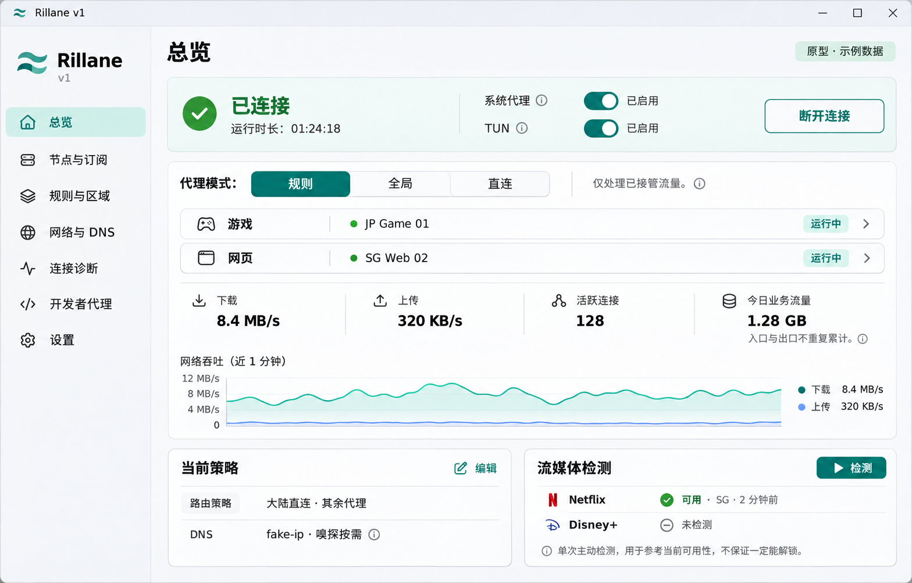
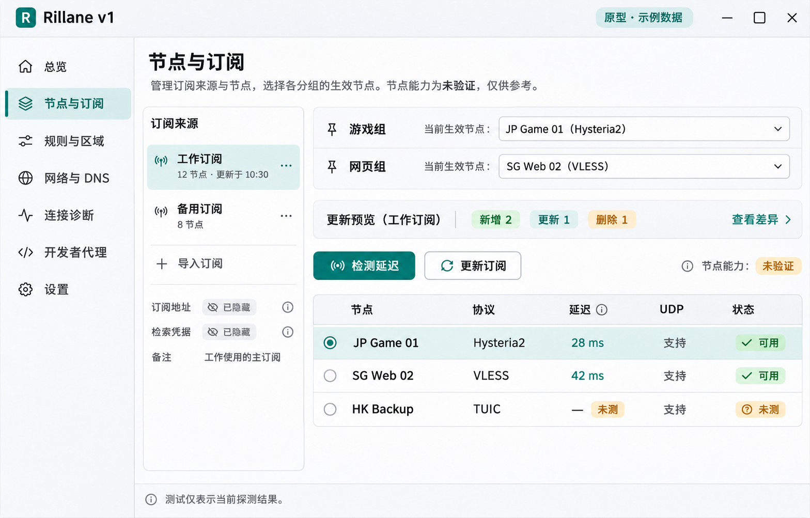
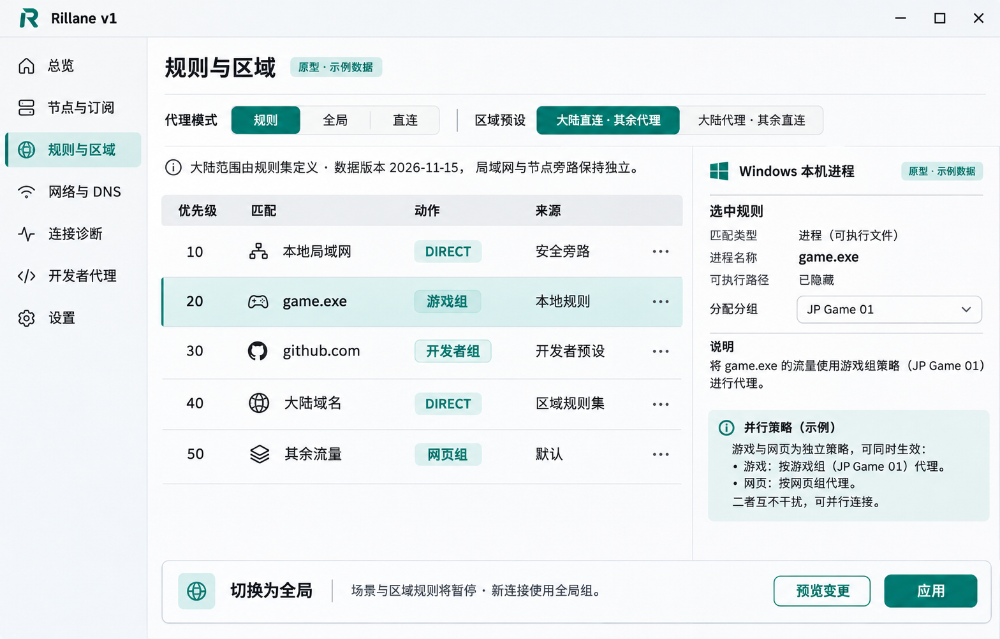
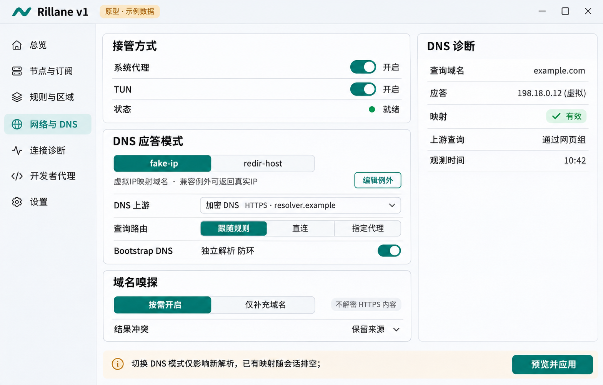
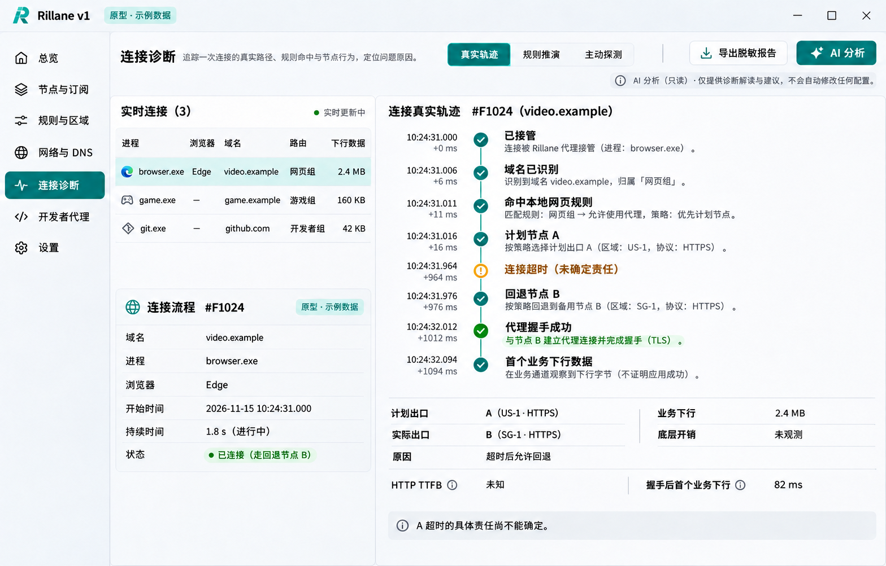
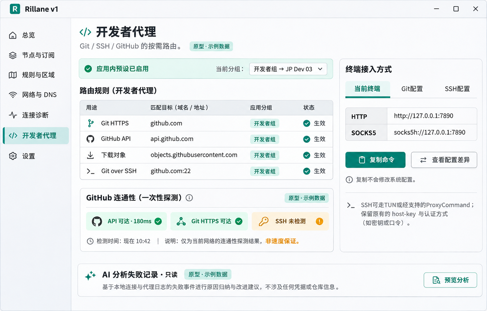
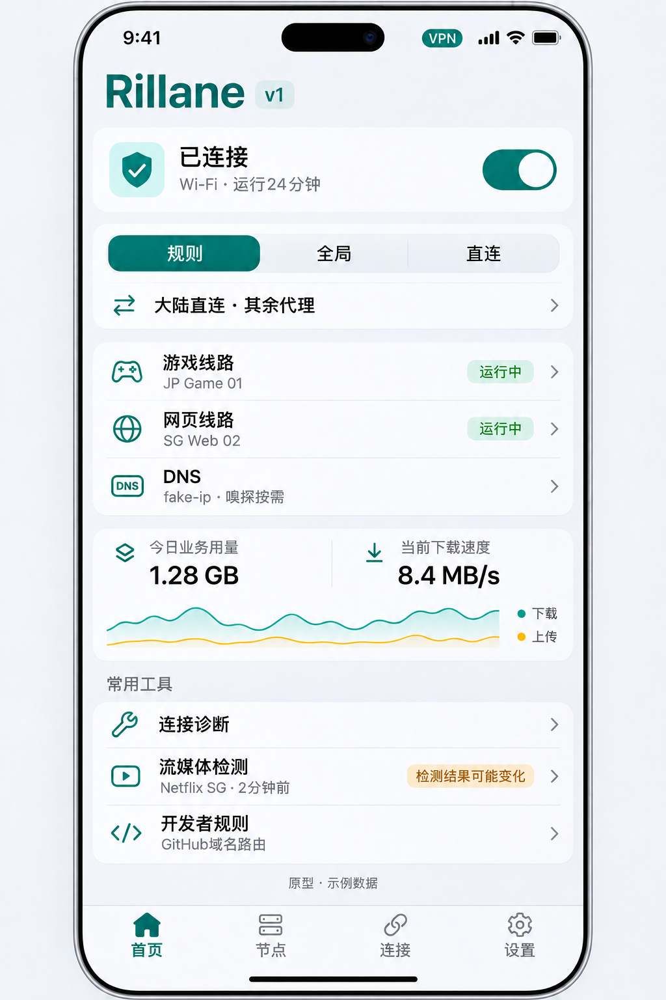
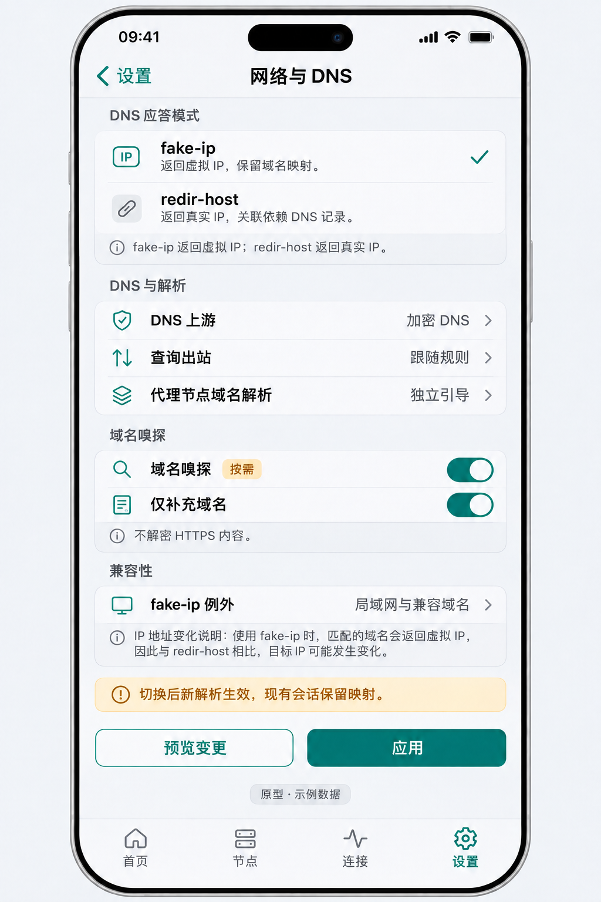
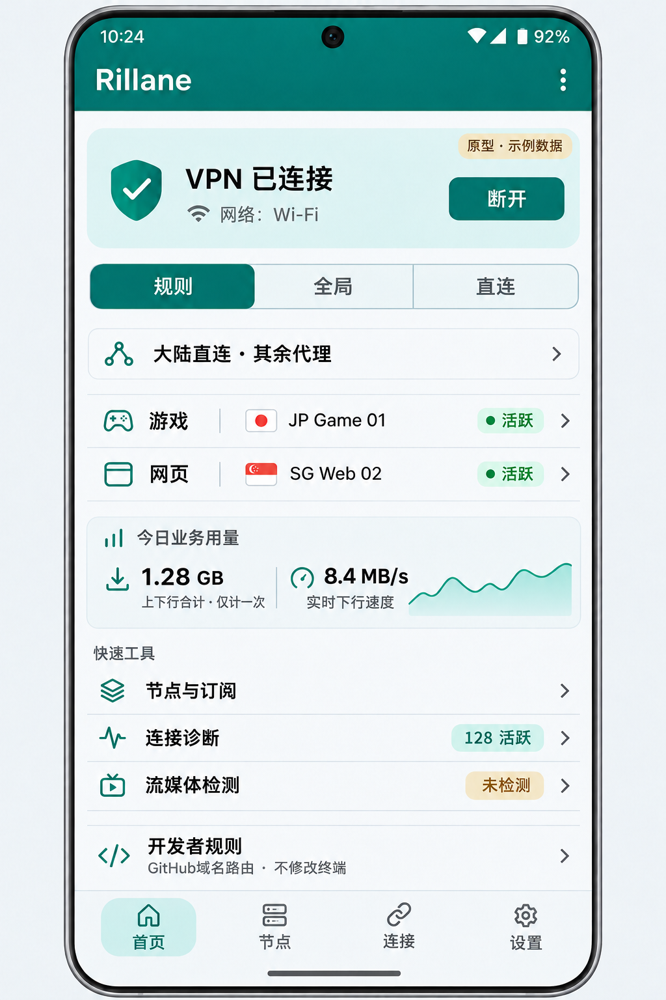
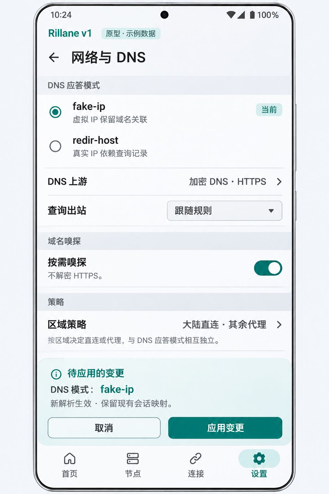

桌面 6 页 / iOS 2 页 / Android 2 页。点击图片查看原图，可直接离线打开本文件。
连接、模式、并行场景、业务流量与媒体检测摘要

来源、分组选择、更新差异与能力状态

规则/全局/直连、区域预设、三桌面进程规则与切换影响

接管、fake-ip/redir-host、DNS出站、引导解析、按需嗅探

实际轨迹、计划/实际出口、回退、未知原因与只读AI

Git/SSH/GitHub路由、当前终端、配置预览与连通性

原生列表、模式、场景、业务流量与常用工具

DNS应答、查询出站、例外、嗅探与应用预览

Material风格、VPN状态、模式与并行场景

独立DNS/区域控制与变更预览

界面参考：Clash Verge 官方预览、Shadowrocket App Store 产品资料。iMac仅确认到进程，未获取实时窗口截图。后续以UI交互规格和内核能力回执为准。
文件清单与SHA-256